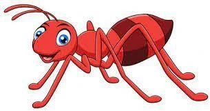
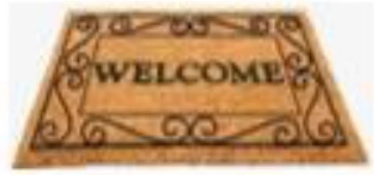
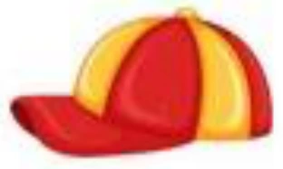

Ideas to make BULIG even better
Ten ideas with a quick mockup each. Pick the ones you like by number (for example: 1, 4, 6), and I will build only those, with a full preview first.
"The cat sat on the mat. It saw a big red ball."
1Record my reading
Pupils record themselves reading a passage aloud and can play it back. The teacher listens later and leaves a short comment. Recordings are kept per passage, so growth is easy to hear.
Pupils + teachersWhy: real oral-reading evidence, not only typed answers.

antLevel 2A
matLevel 2A
capLevel 2A2My word bank
Every word a pupil meets in a lesson is collected into a picture word bank. Tap a word to hear it. "Practice my words" turns them into quick flip-card games.
PupilsWhy: builds vocabulary and gives quick review between lessons.
3Daily goal
Pupils choose a small daily goal (or the teacher sets one). A ring fills as they finish activities, with a little celebration when the goal is reached.
Pupils (teacher can set)Why: short, steady practice every day.
| 1 | 2 | 3 | 4 | 5 | 6 | 7 | 8 | |
|---|---|---|---|---|---|---|---|---|
| Ana R. | ||||||||
| Juan D. | ||||||||
| Liza G. | ||||||||
| Pedro L. |
4Class progress grid
One colour grid for the whole section: pupils down the side, lessons across the top. Tap a square to see that pupil's answers. Spot who is ahead and who is stuck in seconds.
TeachersWhy: the fastest way to see the whole class at once.
5Needs-attention alerts
The teacher Overview lists pupils who have not learned for a week, keep retrying the same activity, or whose reading score dropped. Each one links straight to Manage pupils.
TeachersWhy: no child quietly falls behind.
CERTIFICATE OF COMPLETION
This is proudly given to
for completing Level 2A · Phonological Awareness
October 2, 2026 · Grade 1 · Bonifacio
6Certificates and progress reports
A printable certificate when a pupil completes a level, and a one-page progress report per pupil (levels, lessons, XP, reading scores) for report cards or parent meetings.
Teachers (pupils see their certificates)Why: something real to take home, and ready-made reports.
7Assign tasks with due dates
The teacher assigns a lesson, activity or read-aloud to a section or chosen pupils, with a due date. Pupils see "This week's tasks" on their Overview; the teacher sees who finished.
Teachers + pupilsWhy: turns BULIG into homework and class work you can track.
8Reading check tracker
The Phil-IRI scoring helper already in Class Demo can save each reading check. BULIG then charts each pupil's reading speed and level over the school year, from pre-test to post-test.
TeachersWhy: clear proof of reading growth for each child.
9School-wide progress dashboard
Admins see totals for the whole school or division: active pupils, completion by grade and section, and average reading gain. One click exports it for division reports.
AdministratorsWhy: ready numbers for DepEd reports and planning.
10New school year tool
At year end, promote pupils to the next grade, keep their history, archive graduates and start fresh sections in a few clicks, with a preview before anything changes.
AdministratorsWhy: saves hours of manual updates every June.
My suggestion for the first round
- 4 · Class progress grid and 5 · Needs-attention alerts: quick wins that teachers will use every day.
- 1 · Record my reading: the most valuable for a literacy program.
- 6 · Certificates and progress reports: easy to build, and pupils and parents love them.
Some ideas need a small database update (1, 7, 8 and 10). I will tell you clearly when a feature needs one.